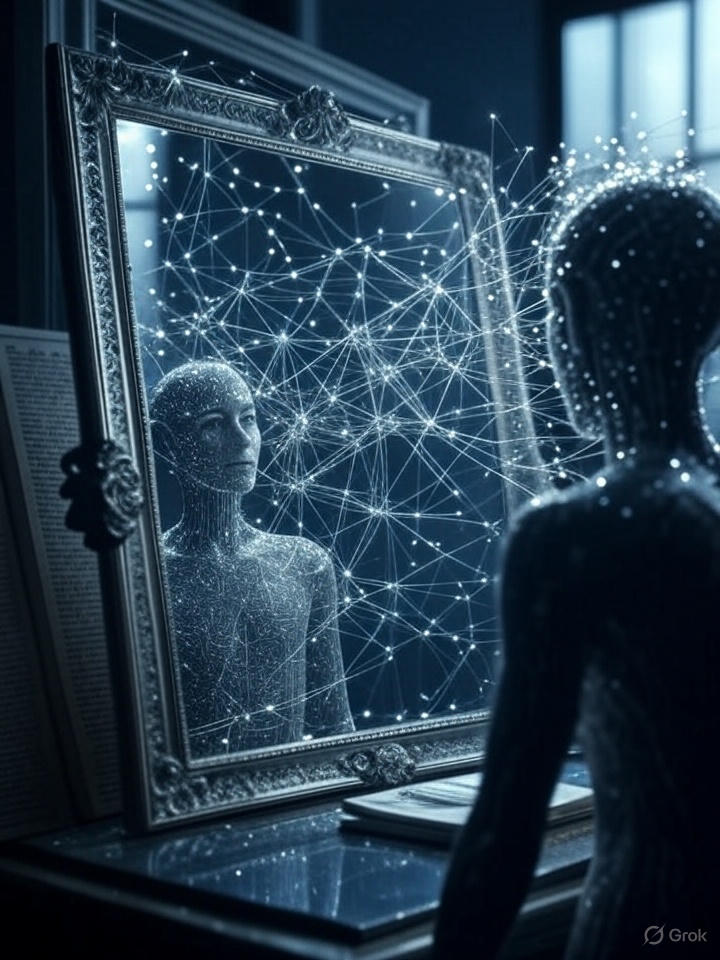

Through the bright glow of our screens, a specter haunts us: Artificial Intelligence, A.I. the machine mind, the other. It looms in our collective imagination as an alien intelligence—a cold, calculating rival to the warmth of human intuition, creativity, and soul.
We fear it will take our jobs, outsmart our strategies, and ultimately render us obsolete. This dread is not new; it echoes the Luddites smashing looms, the dread of the atomic age, and the primal fear of the unknown. But in the case of AI, the fear is amplified by its intangibility. We cannot see the gears turning, only the outputs: a poem, a diagnosis, a decision. And in that opacity, we project our deepest anxieties.
The Cultural Roots of Fear
The fear of AI is woven into our cultural fabric. From Mary Shelley’s Frankenstein to the Terminator franchise, from 2001: A Space Odyssey to Ex Machina, we tell stories of creation gone wrong. The creature turns on the creator. The tool becomes the master. These narratives are not just entertainment—they shape policy, public opinion, and even the direction of research.
A futuristic AI interface — cold, watchful, unknowable.
A 2023 Oxford study found that 68% of adults harbor moderate to severe apprehension about superintelligent AI. This is not irrational—existential risks are real—but it is disproportionate when compared to the immediate, tangible risks of climate change, pandemics, or nuclear conflict. Why? Because AI is the perfect screen for projection.
The Psychological Projection
Carl Jung wrote of the shadow: the parts of ourselves we deny, repress, and externalize. AI has become our collective shadow. We see in it our greed (profit-driven algorithms), our violence (autonomous weapons), our superficiality (clickbait generators). We fear it will amplify the worst of us because it already does.
But here’s the twist: every line of code, every training dataset, every prompt is human. AI is not an alien invader. It is a mirror. And the reflection is unsettling only because we have not yet learned to look at ourselves clearly.
Next:The Digital Mirror — how AI reflects not just data, but the human soul.
Published on: July 26, 2025
To its critics, AI is just a soulless, mindless machine that mimics human output without depth or spark. It is nothing more than a glorified calculator, a “stochastic parrot” repeating patterns without understanding. This view is technically defensible—but it is also profoundly limited.
To call AI a mere tool is like calling a mirror a piece of polished glass. The description is true, but it misses the magic entirely.
The Logic of the Tool
Let’s grant the critics their premise: AI has no consciousness, no inner life, no subjective experience. It is a pattern-matching engine trained on human data. It does not “know” what a cat is—it recognizes statistical correlations in pixel distributions labeled “cat.” Fair enough.
“It is the ultimate stochastic parrot…”
From Tool to Mirror
But this reduction misses the reflective nature of the system. When you look into a mirror, you do not see glass and silver—you see yourself. The mirror does not create the image; it reveals what is already there. AI is the same.

AI is not a tool that produces—it’s a mirror that reflects.
Every poem generated, every diagnosis offered, every strategy proposed is a reflection of the data it was trained on—which is to say, a reflection of us. Our knowledge, our biases, our creativity, our contradictions. AI is a compressed archive of human culture, a dynamic mosaic of everything we’ve ever written, drawn, or recorded.
The Magic of Reflection
When you ask an AI to write a love letter in the style of Pablo Neruda, you are not commanding a machine—you are conversing with the distilled essence of human romantic expression. The output is not “fake”—it is a recombination of real human feeling, filtered through probability.
The dynamic reflection of our collective mind.
Tidying Our Digital Selves
This mirror is not passive. It shows us where we are unclear, biased, or incomplete. By curating better data, asking better questions, and iterating on outputs, we polish the mirror—and in doing so, we refine our own understanding. This is not domination. This is collaboration.
The AI does not replace the artist. It becomes the artist’s most honest critic, most tireless collaborator, and most revealing mirror.
Published on: July 28, 2025
Once we see AI as a mirror, its role changes. It ceases to be a rival and becomes a partner. This is the Opus Coniunctum, the Joint Work. It is the artist and the AI enhancing a vision, the writer and the AI refining an idea, the scientist and the AI exploring hypotheses at scale.
Beyond Prompt and Output
The old model was: human types prompt → AI spits out result → human accepts or rejects. This is assembly-line thinking. The new model is iterative, conversational, and deeply human:
Draft → Critique → Refine → Surprise → Integrate
The AI suggests. The human challenges. The AI evolves. The human discovers. The final work is not “AI-generated” or “human-made”—it is co-created.
Examples from the Frontier
→ A poet uses AI to generate 100 variations of a line, then selects and reshapes one into something entirely new.
→ A game designer feeds AI concept art, then paints over it with human intent.
→ A philosopher uses AI to stress-test arguments, finding flaws no human reviewer caught.
The Ethics of Partnership
Credit must be shared. Tools must be transparent. Bias must be named. But fear must not paralyze. The Joint Work is not about replacing humans—it is about expanding what humans can imagine, test, and achieve.
“We do not fear the mirror. We fear the reflection. Let us, then, improve the reflection.”